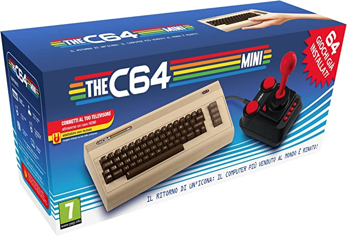
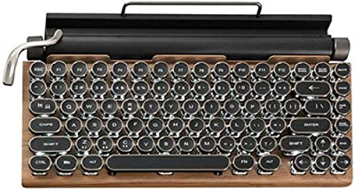
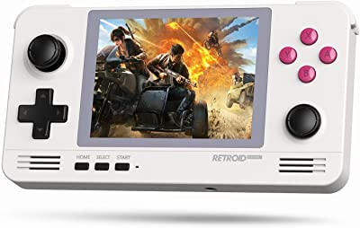
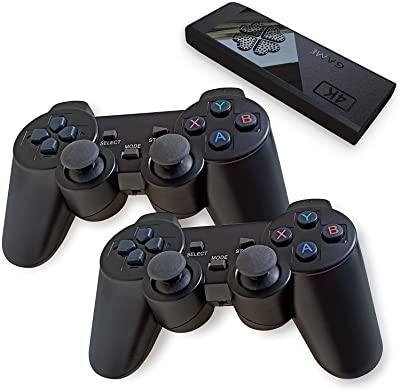
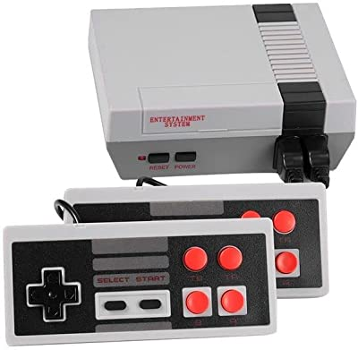

| Immagine | Link Amazon | Descrizione | Prezzo |
|---|---|---|---|
|  | The C64 Mini | Clone del Commodore 64 in formato mini con giochi incorporati - Classificazione PEGI Dai 7 anni in su | € 84,99 |
|  | Tastiera Retro per PC | Tastiera meccanica con 84 tasti, stile retrò, con cavo per Bluethooth, modalità 5.0, con tasti punk e interruttori blu per Win/Mac/Ios/Linux | € 155,99 |
|  | Console Vintage Portatile | retroid Retro Gaming Pocket 2 Plus Palmare; Quad-Core Tiger T310 Processore; 2GB LPDDR4x RAM; 32GB eMMC; uscita Micro-HDMI; Wi-Fi 2.4G/5G + Bluetooth 5.0[RP2+/RETRO] | € 179,95 |
|  | KARAWAN Retro Console | KARAWAN Retro Console con 12.000 Giochi Classici 4k HDMI Arcade Box con 2 Controller Wireless Ergonomici Portatile, Wireless,/PS1/GB/GBA/GBC/MD/SFC/FC/ATAR | € 55,95 |
|  | Nintendo NES Mini Console | Console Retro Nintendo NES mini - 620 Videogiochi Classici Inclusi - Console portatile Arcade a 8 bit per 2 Giocatori - Connessione AV (620 Retro) | € 30,60 |